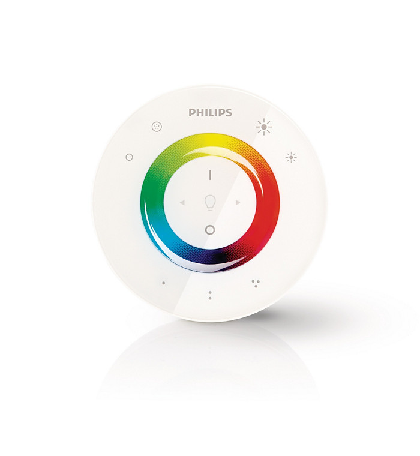

Living Colors gen 2 with Philips Hue Bridge 2.0
One of my christmas presents this year has been the Philips Color Bridge 2.0 + 2 White Ambiance Bulbs:
I already had a Philips Living Colors since 2011, and apparently there’s no Hue compliance, but after searching a bit, I found a way to add the Living Colors as a new light in Philips Hue. Also, I’m able to control it via Home app and Siri! Welcome to the future!
Here are the steps that I’ve followed. It’s a little tricky, and I had to try it few times until I made it work, so keep calm ;)
- Reset the Living Colors remote. I had to open the battery cover and then pressed the reset button. Mine is like this: 
- Reset to factory settings the Hue Bridge. This will erase whole data and configurations.
- Once restarted, press the link button on top of the Hue Bridge, hold it and put the Living Colors remote very close to the bridge. Hold “I” (on) and the first preset with one dot until both LED’s from the Hue’s link button and remote stops blinking. Three finger involved in this step, be careful :D
- Hold the remote on top of the LivingColors and again hold the “I” (on) until the LED on the remote stops blinking.
- Hold the remote on top of the Hue Bridge, press the link button on top of the Hue Bridge and hold down “I” (on) on the remote until the LED on the remote stops blinking.
- Open the Philips Hue app and search for new lights. A new Living Colours light should appear, just add it and you’re done!
Source: Hue Developer Program - Living Colors don’t work after the update. Give me a break…